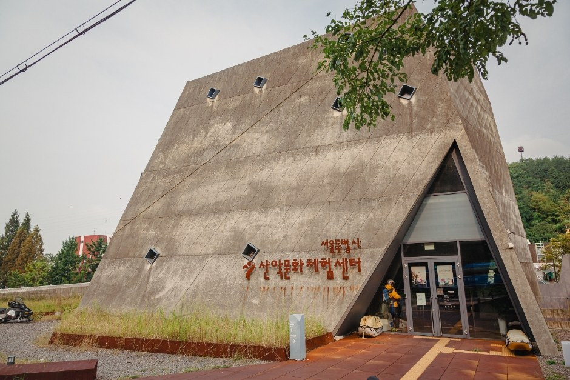
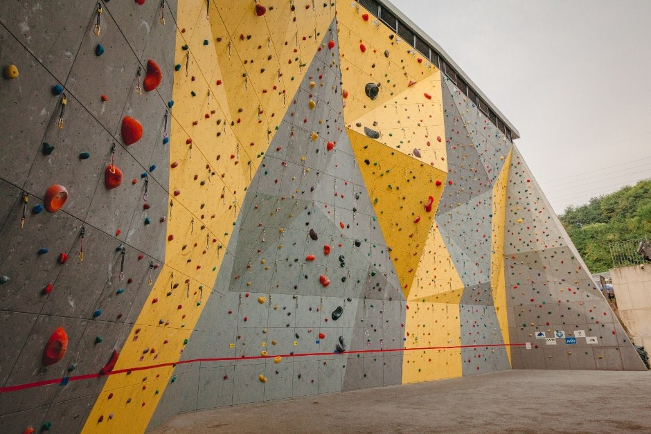
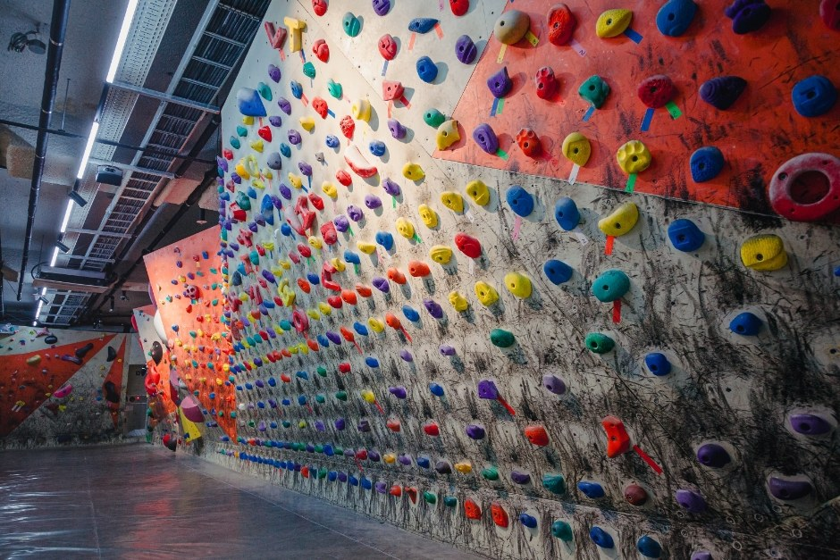
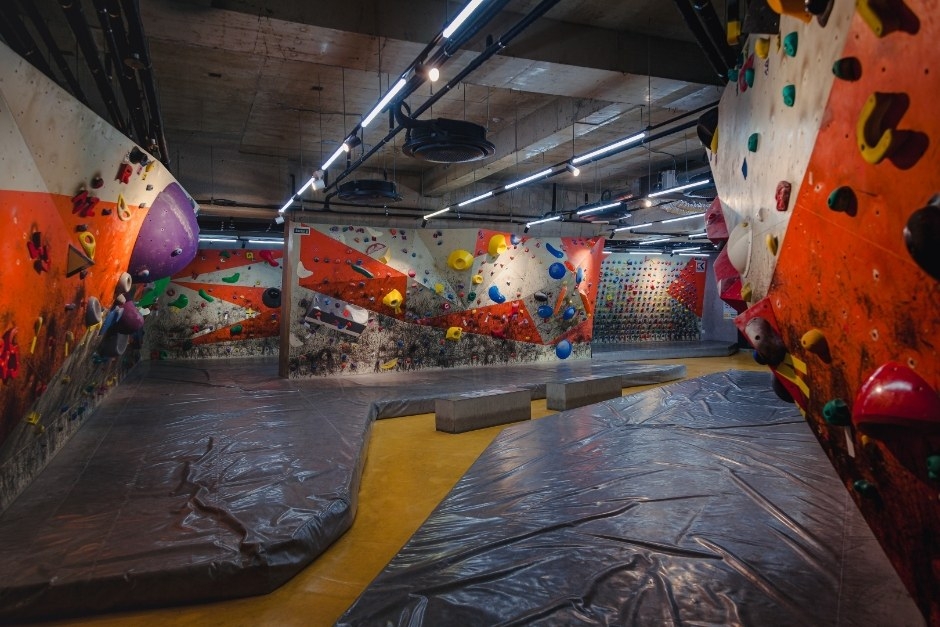
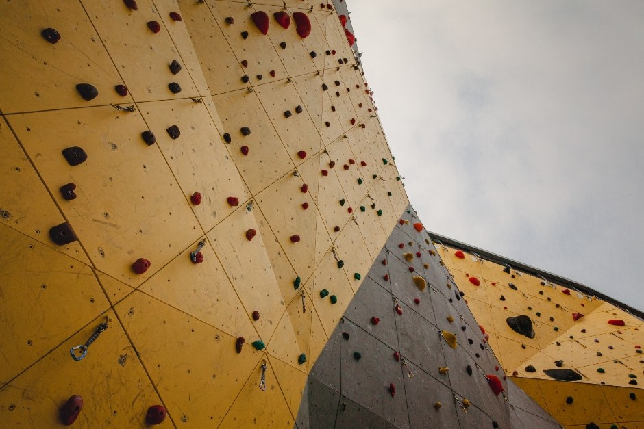

Seoul Mountain Culture Center Guide: Overview
This Seoul Mountain Culture Center guide covers a city-run climbing and mountaineering center in Mapo-gu, at the foot of Haneul Park in the World Cup Park area. Opened in 2021, it combines an indoor bouldering hall, a 12 m adventure wall with auto-belay, a 14.4 m outdoor climbing wall, a free exhibition on Korean mountaineering and a café, all at public-facility prices.
It is one of the easiest places in Seoul for travellers to try indoor climbing for the first time: shoes are included in beginner programs and an instructor runs every session. We checked hours, prices, programs and access against the center's official website, Korea Tourism Organization (KTO) data and Seoul Metropolitan Government notices.
"Climb a 12 m wall in the morning, then walk up to Haneul Park for the silver grass and Han River views."

Facilities: Bouldering, Adventure Zone and Outdoor Wall
- Indoor bouldering hall (B1): four walls about 3.8–4.5 m high over thick safety mats, with beginner to intermediate routes. Setters change the holds regularly.
- Adventure Zone: a 12 m lead wall fitted with auto-belays, so you can climb without a partner holding the rope, plus a 7 m "sky climb" wall and a 12 × 30 m via ferrata-style top-rope course.
- Outdoor lead wall: 14.4 m high and 31 m wide, built to international competition standards. It runs April to November; from December to March lead climbing moves to the indoor lead wall. It is for experienced climbers with their own gear and a belay partner.
- Extras: rental climbing shoes, showers, a permanent exhibition hall and Daystar Café on the ground floor.


Trying a Climbing Day Experience
First-timers usually pick the Bouldering Experience (50 minutes, age 8+, up to 20 people) or the Adventure Experience (50 minutes, age 8+, up to 10 people) on the 12 m wall. You choose shoes in your size at the desk, sign a liability waiver, then listen to a short safety and technique briefing from the instructor before practising how to balance and move on the wall.
After three bouldering experiences you can book Bouldering Free sessions (3 hours 50 minutes). Lead Free sessions are only for skilled lead climbers in pairs with their own harness, rope and belay device. Wear stretchy clothes, trim your nails and leave rings and watches in a locker.

Mountaineering Exhibition and Café
Even if you do not climb, the ground-floor permanent exhibition is free and worth a short look. It presents milestones of Korean mountaineering, including the late Park Young-seok, who in 2005 became the first person to complete the mountaineering "Grand Slam" of the 14 highest peaks, the Seven Summits and both poles. A second-floor gallery hosts changing exhibitions.
Next to it, Daystar Café serves drinks and brunch with free Wi-Fi and power outlets, a useful spot to wait while friends or children climb.
Visitor Information
| Item | Details |
|---|---|
| Address | 112 Haneulgongwon-ro, Mapo-gu, Seoul (서울특별시 마포구 하늘공원로 112) |
| Hours (official site) | Mon closed (rentals only); Tue 10:00–19:00 (partial); Wed–Fri 12:00–21:00; Sat–Sun 10:00–19:00 |
| Closed | Mondays, January 1 and public holidays (KTO lists weekend holidays as open); check notices |
| Beginner programs | Bouldering / Adventure Experience, 50 min, age 8+ |
| Prices | Experience 10,000 (child) / 13,000 (teen) / 15,000 (adult) KRW; one-day class 46,000–52,000 KRW; exhibition free |
| Booking | Naver booking via seoulmccenter.kr; groups and rentals by phone |
| Phone | +82-2-303-8858 (main); +82-70-4190-8859 / 8860 (climbing) |
| Parking | Paid lot at the main gate; program users get up to 3 hours free (once a day, one car) |
| Opened | Trial from March 25, 2021; officially May 1, 2021; floor area 2,197.68 m² |
Sources: the official Seoul Mountain Culture Center website (seoulmccenter.kr, home and facilities pages), Korea Tourism Organization data for the center, Seoul Metropolitan Government's sports portal and Seoul mediahub opening notices (2021). Photos © Korea Tourism Organization (KOGL Type 1, attribution). No AI-generated images. Hours and prices change, so confirm on the official booking page.
Getting There
The simplest route is bus 8777 or 9707 to the Nanji Hangang Park stop, then about 250 m on foot. On the subway, take Line 2 to Dangsan Station, leave by Exit 8 and transfer to bus 9707. From Line 6 Mapo-gu Office Station Exit 1, bus 271 goes to the World Cup Park 3-danji Main Gate stop, about 1.1 km from the center; buses 470, 6715 and 7715 also stop there.

Tips for Visiting
- Book first: sessions are small and fill up at weekends; the booking page is in Korean, so use your browser's translate tool or ask your hotel for help.
- Avoid Mondays: the center is closed to individual visitors.
- Late autumn: the outdoor lead wall closes for the season after November; the indoor walls run all year.
- Combine it: walk to Haneul Park for silver grass and city views, or to Nanji Hangang Park for a riverside picnic.
- Bring: comfortable sportswear, socks and water; showers are available after climbing.
How It Compares with Other Seoul Activities
| Seoul Mountain Culture Center | Private climbing gyms | Hiking Bukhansan | |
|---|---|---|---|
| Cost | Public prices, from about 10,000 KRW | Usually 20,000–30,000 KRW day pass | Free |
| Beginner support | Instructor-led 50-min programs | Varies, often self-guided | None, self-guided |
| Highlights | 12 m auto-belay wall, 14.4 m outdoor wall, free exhibition | Bouldering, late hours | Real rock ridges and views |
| Weather | Indoor options all year | Indoor | Weather dependent |
| Best for | First-time climbers, families with kids 8+ | Regular climbers | Fit hikers |
Who It Suits
- Great for: Travellers who want to try climbing safely with an instructor.
- Great for: Families with children aged 8 and over looking for a rainy-day activity.
- Great for: Visitors exploring World Cup Park, Haneul Park or Mangwon in Mapo.
- Less ideal: Anyone who cannot book in Korean and has no help, or who visits on a Monday.
Plan Your Seoul Trip
Seoul Mountain Culture Center FAQ
Where is the Seoul Mountain Culture Center?
It is at 112 Haneulgongwon-ro, Mapo-gu, inside the World Cup Park area next to Nanji Hangang Park and below Haneul Park. The closest bus stop is Nanji Hangang Park (buses 8777 and 9707), about 250 m away. From Subway Line 2 Dangsan Station Exit 8 you can transfer to bus 9707.
Can beginners and tourists try climbing there?
Yes. The 50-minute Bouldering Experience and Adventure Experience programs are designed for first-timers aged 8 and over. Climbing shoes are included in experience and lesson programs, you sign a liability waiver, and an instructor explains the basics before you climb.
How much does it cost?
Seoul's sports portal lists the 50-minute bouldering, lead or top-rope experience at 10,000 KRW for children, 13,000 KRW for teens and 15,000 KRW for adults, and one-day classes with an instructor from 46,000 to 52,000 KRW. The gallery exhibition is free. Prices can change, so check the center's Naver booking page before you go.
What are the opening hours?
According to the official website: closed on Mondays (rentals only); Tuesday 10:00–19:00 with partial operation; Wednesday to Friday 12:00–21:00; Saturday and Sunday 10:00–19:00. Korea Tourism Organization data also lists closures on public holidays and set break times, so confirm before visiting.
Do I need to book in advance?
Experience programs and lessons are booked online through the center's Naver booking page, and sessions have small capacities (20 for bouldering, 10 for the Adventure Experience). Booking ahead is strongly recommended, especially at weekends.